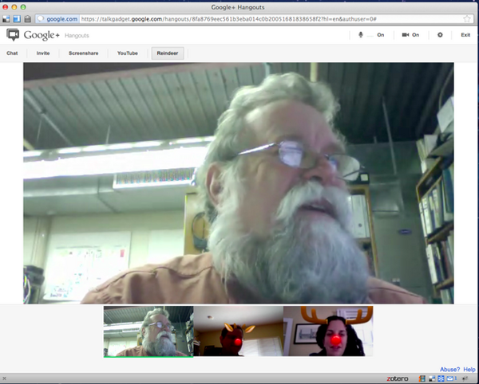
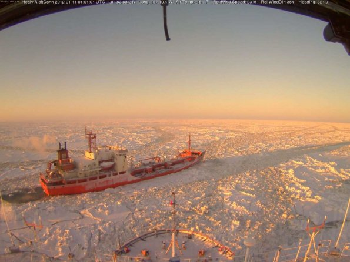
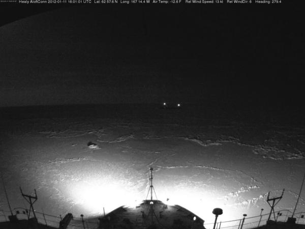
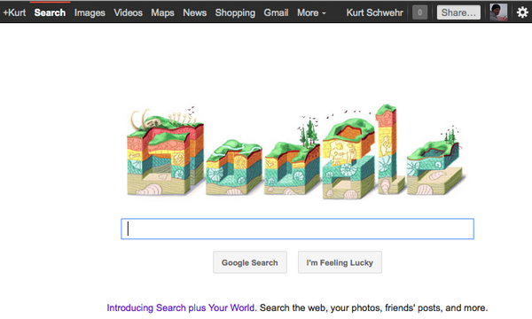
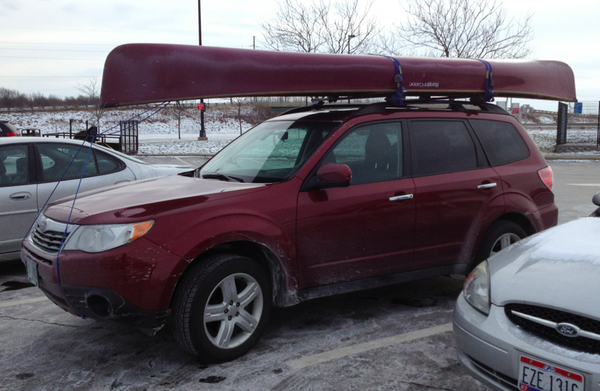

01.28.2012 08:26
emacs rocks
The emacsrocks channel on
youtube looks pretty awesome. The first episode shows you C-x r
t <RET> for retangular region replace. Nice!
01.22.2012 07:47
John Konrad gives a play by play of the Costa Concordia
John did an excellent job describing
what was going on with the Costa Concordia based on what is visible
in the AIS vessel tracking data.
gCaptainâÄôs John Konrad Narrates the Final
Maneuvers of the Costa Concordia. He was on a small sail boat
at the time so there is some wave noise in the video. I hope John
makes another video once the details are out. The vessel should
have the maritime equivalent of a black box recorder called a
Voyage
Data Recorder (VDR). These devices are supposed to record the
thruster and rudder commands along with a voice recording of the
bridge.
Reconstruction of the Costa Concordia Tragedy, Narration by John Konrad from gCaptain.com on Vimeo.
01.22.2012 07:12
GNU m4 - a macro language
Learning new programming languages,
especially if they are very different from what you are accustomed
to, is good for the mind. Hoever, IMHO, the only reason to learn
GNU m4 is help with understanding GNU autoconf. There are so many
"better" templating systems out there that you can now use. My
current favorite is to write python with the format string method.
e.g.
I just spent some time with Michael Breen's Notes on the M4 Macro Language. This was a good way to get familar with the language and I added what I built to my github template repository: overview.m4
'{0} for position or {name} to use var name'.format('by number',2,3,4,name='var name')
gives
'by number for position or var name to use var name'And it gets easier when you use "**locals()" to expand everything into your template environment for initial development. Warning the locals function can end up being super slow.
I just spent some time with Michael Breen's Notes on the M4 Macro Language. This was a good way to get familar with the language and I added what I built to my github template repository: overview.m4
#!/usr/bin/env m4
dnl -*- compile-command: "m4 --define=REPLACEME=Rascal --define=CAT=yes try.m4" -*-
dnl the first line ends up in the output if you ./try.m4
dnl The second line tells emacs how we want to run this command with M-x compile
dnl SEE ALSO: http://mbreen.com/m4.html
dnl This file should be considered public domain. -Kurt Schwehr 2012-Jan-21
NOTE: why would be use m4 rather than python? Outside of GNU
autoconf, I really think we should not be using m4. Please use python
with the string ".format" method instead.
# This is a comment in m4 that goes through
dnl is do not print to the end of the line
dnl
define(AUTHOR, Kurt Schwehr)
`AUTHOR' is AUTHOR and there is a newline in there???
define(TITLE, M4 language by example)dnl
This TITLE has no newline dnl
`#' is not a comment hash. Macros will still work... TITLE
dnl The next line comes from the --define command line
This REPLACEME is comes from outside the file
define(MacroWithNewline, `line with
newline after the first with')dnl
Use MacroWithNewline here.
define(PARENS, ())dnl
brackets: PARENS
undefine(`PARENS')dnl MUST quote the value
PARENS
define(LPAREN,`(')dnl
define(RPAREN,`)')dnl
LPAREN bracketed RPAREN dnl -> ( bracketed )
define(`LEFT',`[')dnl
LEFTSQUARE
define(`LEFT',`{')dnl
LEFTCURL
define(`plus', `+')dnl
plusplus # oops!
plus()plus # works!
define(`oper', `plus')
oper()oper # oops!
oper`'oper # best
define(`oper',`plus`'')dnl safest
oper()plus
ifelse(`provides
multiline
comments')dnl
CAT
ifdef(`CAT',We have a cat)
ifdef(`HORSE',We have a horse) # No. We do not have a horse
define(a,1)dnl
define(b,1)dnl
define(c,3)dnl
define(d,4)dnl
a b
ifelse(a,b,c,d)
define(`b',2)dnl
a b
ifelse(a,b,c,d)
We have math
1+1 => eval(1+1)
2**8 => eval(2**8)
incr(41)
bools:
0 || 1 => eval(0||1)
0 && 1 => eval(0&&1)
len(`string length')
substr(`my string',1,3) counts start at 0 and includes the character at position [3] (4th)
dnl You can call external programs
syscmd(`ls -l')
I feel like I have a much better handle on what it is to be m4. The
parts on looping demonstrate how constrained/annoying the language
is.01.18.2012 21:22
Down With Gravity
This makes me wonder what happened to
my juggling pins! Yeah, I was never even close to this level.
01.18.2012 07:34
Prowd to be a googler
Protect IP and SOPA are just out and
out dumb. I have lots of respect for people who create content, but
non for the MPAA, RIAA, the software equivalent thing called the
BSA.
I am glad that wikipedia is doing this, but ouch! I needed to look something up this morning. Dear congress, make the insanity stop.
Google's End Piracy, Not Liberty.
I am glad that wikipedia is doing this, but ouch! I needed to look something up this morning. Dear congress, make the insanity stop.
Google's End Piracy, Not Liberty.
01.16.2012 19:47
AIS time series of the Costa Concordia grounding
I'm glad someone else was doing an
AIS time series plot. I've done enough of them to last a life
time.
Brian Fitzpatrick posted on G+ about the Costa Concordia. The track makes you wonder what in world was happening on the ship! Was there a mechanical failure or something to seriously distract the bridge crew (like small non-AIS vessels in the way)? It would be better visualized with a chart rather than just shorelines.
Brian Fitzpatrick posted on G+ about the Costa Concordia. The track makes you wonder what in world was happening on the ship! Was there a mechanical failure or something to seriously distract the bridge crew (like small non-AIS vessels in the way)? It would be better visualized with a chart rather than just shorelines.
01.16.2012 13:13
MB-System and the USCGC Healy
Dale, Monica and I tested Google
Hangout today to make sure we could do video, chat, screen sharing
etc. I even tried the Reindeer button. I wish I were able to
actually be there for all the MB-System discussions, but a handout
is the next best thing.
On my list of things to do is to fix my code that handles science and image data from the USCGC Healy. Dale pointed out that the Aloftcon camera has snapped some spectacular images in the last few days.
First, the Healy showing the ship it is trying to get to Nome, AK: 20120111-0101.jpeg
Nightime view of the ice with the lights of Nome off in the distance:
20120111-1601.jpeg

On my list of things to do is to fix my code that handles science and image data from the USCGC Healy. Dale pointed out that the Aloftcon camera has snapped some spectacular images in the last few days.
First, the Healy showing the ship it is trying to get to Nome, AK: 20120111-0101.jpeg


Nightime view of the ice with the lights of Nome off in the distance:
20120111-1601.jpeg


01.15.2012 15:53
Video introduction to fink
If you are new to using fink on the
Mac for installing software, I hope this helps you get more
comfortable with the process!
01.11.2012 20:34
Google Doodle - Nicholas Steno
While it is just coincidence that I
started working at Google on Monday, it is pretty awesome to have a
Geology Google Doodle today!
If you missed it, here is a screenshot and the link is to Nicolas Steno. I didn't know that he thought about fossils.
And yes, I will still be blogging while I am at Google. Some people worried that I would drop off the face of the earth into the backends of the geo systems once I got here. This post is to say, that I'm still around, but it's going to take me a while to recover from the transition to the point where I'm blogging again. I've been meeting tons of fellow Nooglers and lots of well established Googlers. I've been getting a serious workout on the G-bikes trying to get everywhere that I'm supposed to be... it's a huge campus.
Driving across the country was quite the experience. I ended up having a cold last week, so I avoided trying to drop in on anyone. The trip started off with temps randing from 8-20 F and then I got to Nebraska and found 72 F in January!! Crazy!
I even snagged a short video of the The Tree of Utah. Thanks to Tyler Erickson for telling me what this crazy thing is called.
Also, to get to know more about how Google's advertising systems work (now that I'm not teaching where I was telling my students to go watch my videos), I am enabling some of the AdSense features. I've never hit the point where any of my stuff reached the point where it was enough to generate a check... I'm up to $13.62 after 3 years. I'm not much of an advertiser and my blog hasn't been much of a good place for advertisers
If you missed it, here is a screenshot and the link is to Nicolas Steno. I didn't know that he thought about fossils.

And yes, I will still be blogging while I am at Google. Some people worried that I would drop off the face of the earth into the backends of the geo systems once I got here. This post is to say, that I'm still around, but it's going to take me a while to recover from the transition to the point where I'm blogging again. I've been meeting tons of fellow Nooglers and lots of well established Googlers. I've been getting a serious workout on the G-bikes trying to get everywhere that I'm supposed to be... it's a huge campus.
Driving across the country was quite the experience. I ended up having a cold last week, so I avoided trying to drop in on anyone. The trip started off with temps randing from 8-20 F and then I got to Nebraska and found 72 F in January!! Crazy!

I even snagged a short video of the The Tree of Utah. Thanks to Tyler Erickson for telling me what this crazy thing is called.
Also, to get to know more about how Google's advertising systems work (now that I'm not teaching where I was telling my students to go watch my videos), I am enabling some of the AdSense features. I've never hit the point where any of my stuff reached the point where it was enough to generate a check... I'm up to $13.62 after 3 years. I'm not much of an advertiser and my blog hasn't been much of a good place for advertisers
01.08.2012 14:33
UNOLS vessel trouble
Coast Guard goes to rescue of 40 aboard research vessel (CNN;
two days ago). Thanks to Ashton and Monica for this link.
Update 7:10PM: Thanks to Scott F. for an update. Punctured research ship safely back in port (Honolulu Star Advisor)
A Coast Guard rescue swimmer boarded the 186-foot research vessel Kilo Moana and three pumps were delivered, according to a Coast Guard news statement.I don't know any more about this thank the CNN article. Sometimes these things are a big deal, other times not. I'm reminded of the time that I was IM'ing with Art T. while he and Roland were in the Black Sea and I got the IM saying they were abanding ship because the captain finally admitted that the shaft seal had gone and the pumps were not keeping up. I believe the last IM I got before they disconnected was "Roland says to tell his wife that he loves her." Needless to say, they were transfered to Bob Ballards ship and treated to fine dinning, so they never were in any real danger, but the ship they had been on was definitely a mess.
Update 7:10PM: Thanks to Scott F. for an update. Punctured research ship safely back in port (Honolulu Star Advisor)
The 186-foot vessel began taking on about 400 gallons of water an hour Friday morning while about 60 miles north of Oahu, the Coast Guard said. The hole appeared behind some pipes in the starboard hull of the catamaran and was difficult to reach, said Brian Taylor, dean of the UH School of Ocean and Earth Science and Technology, on Friday. He said partial flooding in a compartment caused a pump to fail, and the Coast Guard was called for help. He said the crew was able to patch the hole and slow the leak. ...
01.07.2012 07:36
Whale tagging makes slashdot
Today's blog post is coming to you
from scenic Elko, NV. Driving across the country is a reminder that
our nation's infrastructure is not very good. It's definitely way
better than the last time I drove across the country in 2005
heading east. In my trip west, I would have expected excellent 3G
coverage all along I-80 with it being one of the key arteries of
our country. The sad fact is that I've mostly been in Edge with my
AT&T iPhone and there were even a few dropouts. Hotel and rest
stop wifi is seriously bad for a business user. If you just want to
surf simple web sites, these wifi setups sometimes work, but good
luck if you want to VPN in or use SSL. My current hotel in Elko, NV
tries to block you from using more than one device at a time on the
wireless, but at least, the key is just your room number, so I can
steel entries from other rooms until all my devices are online as I
my basic setup is 3 wifi devices. One thing that is totally awesome
while driving is Waze. I have a garmin Nuvi GPS up in the window,
but I keep Waze running on the iphone and my music/podcasts have
been interupted a few times for alerts about upcoming cars in the
shoulder. I just wish waze had an easier way to flag these things
while driving. I'm not going to use the screen keyboard while
driving. I really hate the iphone for now having more controls I
can use without looking. Siri has trouble with the wind noise from
the canoe on top of my car 
What did I really stop to write about? Slashdot has: A Whale's Virtual Reality. This is Colin Ware's work with Dave Wiley and company at the Stellewagen Bank National Marine Sanctuary.
The actual article is in Science NOW: A Whale's Virtual Reality
I don't have time before I hit the road to read the article, but it looks interesting. I've been listing to a lot of great podcasts that I hope to write about when I'm not behind the wheel all day.
What did I really stop to write about? Slashdot has: A Whale's Virtual Reality. This is Colin Ware's work with Dave Wiley and company at the Stellewagen Bank National Marine Sanctuary.
The actual article is in Science NOW: A Whale's Virtual Reality
He showed those maneuvers to the audience using video animations made possible by new software from Colin Ware, a computer scientist at the University of New Hampshire in Durham who specializes in visualizing very large amounts of information. The program, "Track Plot," incorporates the tag data and approximates the path of the whale underwater.Grrr... No embeddable video?
I don't have time before I hit the road to read the article, but it looks interesting. I've been listing to a lot of great podcasts that I hope to write about when I'm not behind the wheel all day.